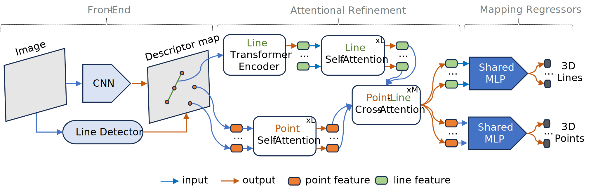

Abstract
PL2Map can simultaneously predict 3D coordinates of points and lines for high-accuracy camera re-localization.
Recent advancements in visual localization and mapping have demonstrated considerable success by integrating both point and line features. However, expanding the localization framework to include additional mapping components frequently results in increased demands for memory and computational resources dedicated to matching tasks. In this work, we show how such a lightweight neural network can learn to represent both 3D point and line features, and then exhibit leading pose accuracy by harnessing the power of multiple learned mappings. In detail, we utilize a single transformer block to encode line features, effectively transforming them into distinctive point-like descriptors. Subsequently, we treat these point and line descriptor sets as distinct yet interconnected feature sets. Through the integration of self and cross-attention within several graph layers, our method effectively refines each feature before regressing 3D maps by two simple MLPs. In comprehensive experiments, our indoor localization findings surpass those of Hloc and Limap across both point-based and line-assisted configurations. Moreover, in outdoor scenarios, our method secures a significant lead, marking the most considerable enhancement over state-of-the-art learning-based methodologies.
Pipeline overview

Given a set of images $\{\mathbf{I}^{i}_{\mathcal{T}}\}_{i=1}^{n}$ and its reconstructed SfM model $\mathcal{E}$, we aim to develop a sparse regression module, which can encode entire environment $\mathcal{E}$ by a compact function $\mathfrak{F}(.)$, where $\mathfrak{F}$ is the prorposed D2S neural network as above. The proposed function $\mathfrak{F}(.)$ inputs local descriptors $\mathbf{D}^{i} \in \mathbb{R}^{K \times D}$ extracted from $\mathbf{I}^{i}$ and outputs their corresponding 3D coordinates $\mathbf{W}^{i} \in \mathbb{R}^{K \times 4}$ (an additional dimension for reliability detection). The ultimate goal of the proposed module is to perform visual re-localization, a task of estimating camera pose $\mathbf{T} \in \mathbb{R}^{4\times4}$ of the query image $\mathbf{I}_{q}$.
Results on KingsCollege Cambridge
Visualizations on the attention weights in different graph layers

We visualize the attention weights as the blue rays for three attention layers of 1, 3, and 5. We retain only attention weights within the threshold of $\alpha_{ij} > 5\times10^{-4}$. The visualization for attention weights demonstrates that the D2S has successfully learned to focus on distinctive or reliable regions using 5 graph layers. This then results in the capability of predicting robust features and their 3D coordinates.
Citation
@article{bui2023d2s,
title={D2S: Representing local descriptors and global scene coordinates for camera relocalization},
author={Bui, Bach-Thuan and Tran, Dinh-Tuan and Lee, Joo-Ho},
journal={arXiv preprint arXiv:2307.15250},
year={2023}
}